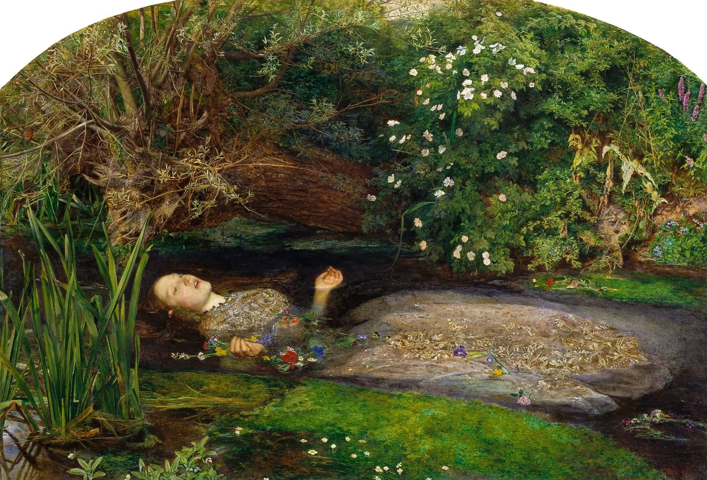
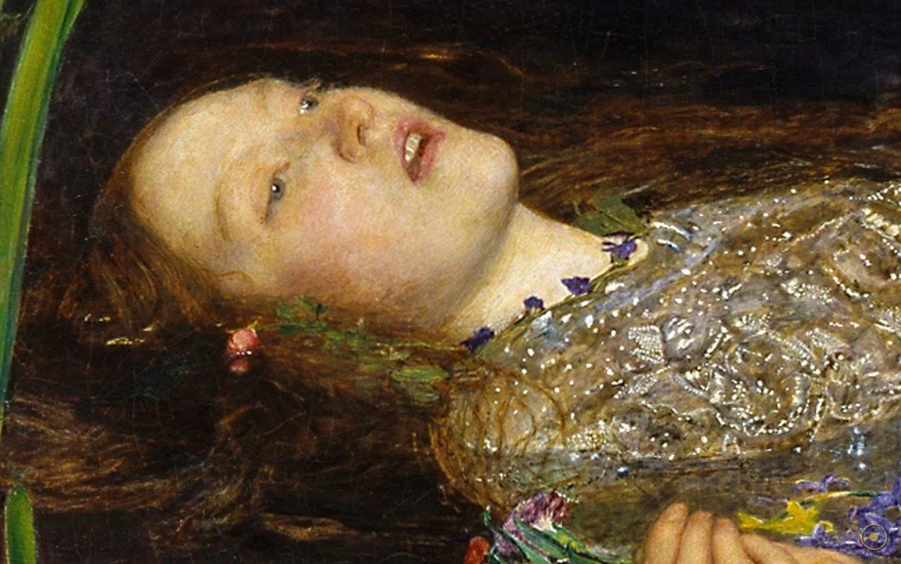
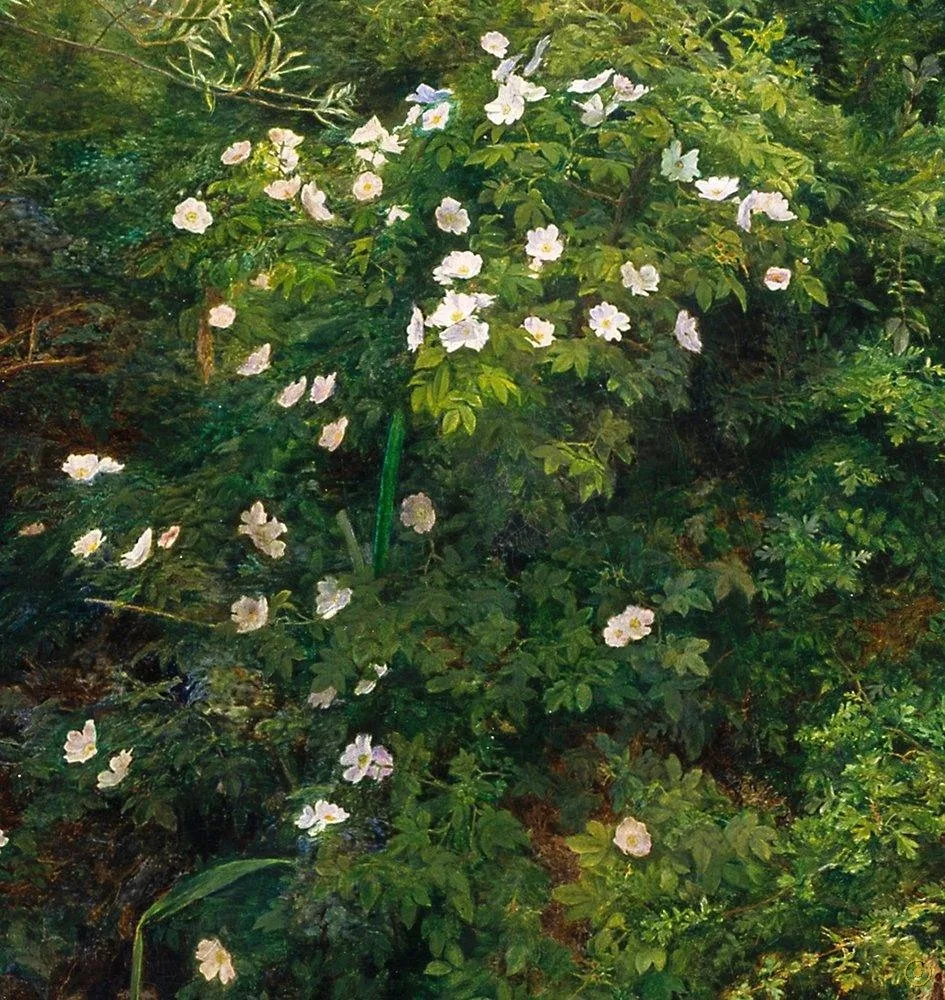
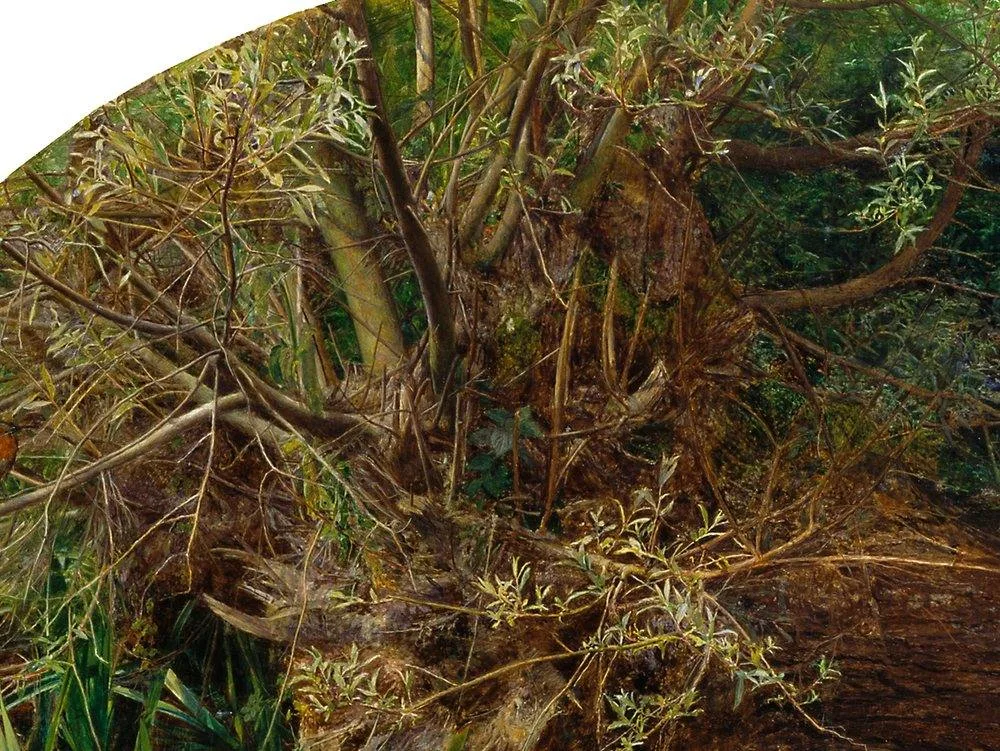
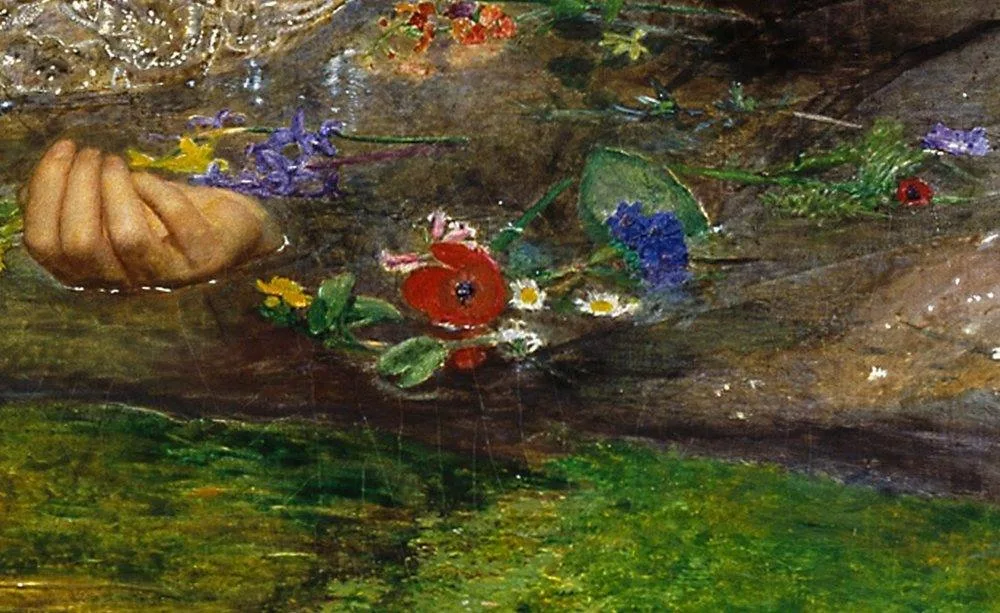
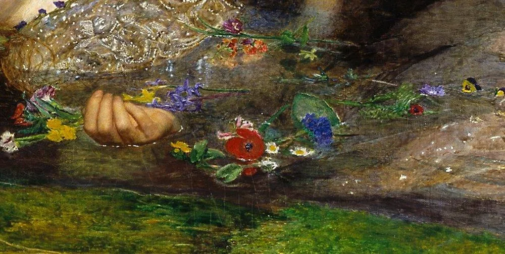
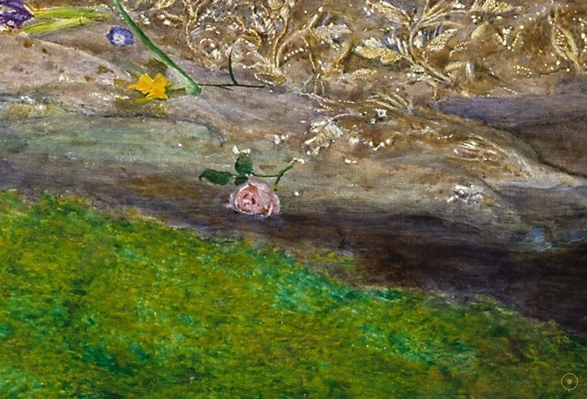
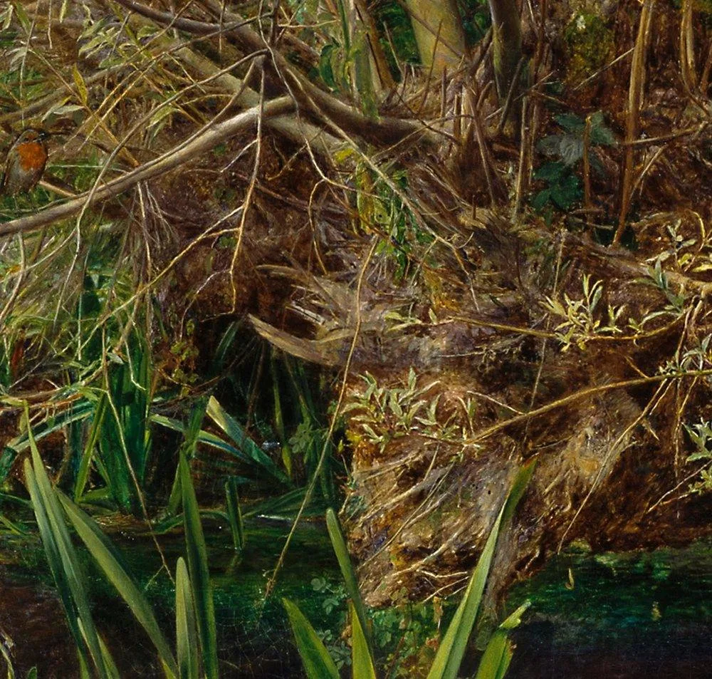
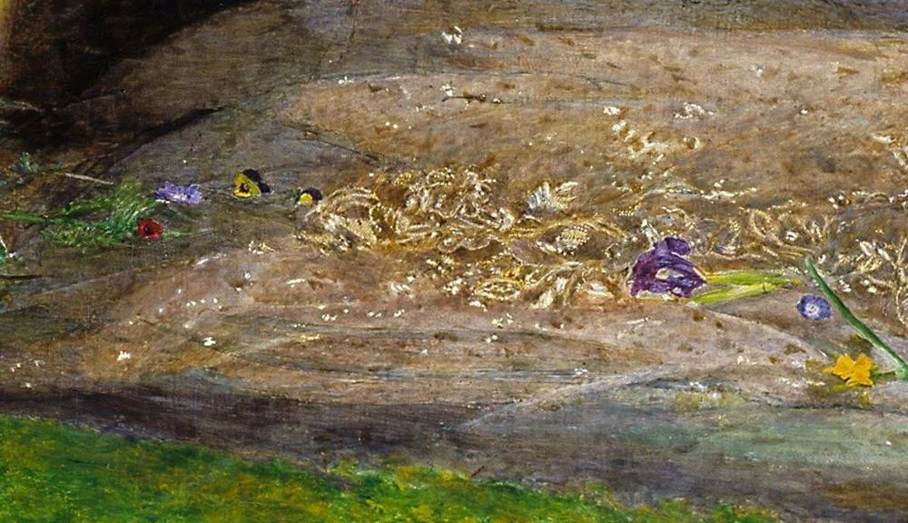

《哈姆雷特》第四幕。奥菲利亚的父亲被恋人误杀，爱人远走，她失了常态。没有人看见她如何落水——我们只知道王后乔特鲁德后来这样描述：
在她来到河岸的时候，她让柳枝上垂下的野花编成了一只花环。
就在她攀上斜枝去挂花环时，树枝折断了——她连人带花，一起落进了呜咽的溪水。
她的衣服四散展开，使她暂时像人鱼一样漂浮在水上；她嘴里还断断续续唱着古老的谣曲，仿佛一点不觉得自己的险境，又仿佛她本来就是生长在水中的一般。
可是不多一会儿，她的衣服被溪水浸得沉重起来，她可怜的歌还没有唱完，人就沉到了泥里。
—— 据朱生豪译本节录
米莱斯画下的，正是“像人鱼一样漂浮”与“沉到泥里”之间的那一瞬。
米莱斯像博物学家一样画下了每一种植物——因为它们多数只在特定月份开花，这条英格兰小溪成了一座“不可能同时盛开的花园”。而这些花草，在维多利亚时代都有花语。

点击画面中的 ✦ 光点 查看细节与花语 · 图片来源：Wikimedia Commons（公有领域）
这幅画分两段完成：先画溪水与草木，再画人物——这也是前拉斐尔派“忠于自然”的方法论。
1851 夏 — 秋 · 萨里郡尤厄尔
22 岁的米莱斯来到霍格斯米尔河（Hogsmill River）畔，每周六天、每天约十一小时户外写生，风雨无阻，前后近五个月，才画完这片溪水、柳荫与花草。
➤1851 冬 — 1852 · 伦敦画室
回到伦敦高尔街的画室，模特伊丽莎白·西达尔穿上古董裙，躺在盛水的浴缸中还原漂浮姿态——为了保温，米莱斯在浴缸下点了油灯。
➤1852 · 皇家艺术学院年展
画作公开展出，有评论嫌它“过分琐碎”，也有人惊异于每一片叶子的真实。争论声中，它渐渐成为前拉斐尔派最著名的一张面孔。

为了让她“浮”在画面里，西达尔要在冬天的画室中长时间泡在温水里。某天，浴缸下的油灯悄悄熄灭，没有人察觉，水温一点点变冷。
她因此重病。她的父亲态度强硬，坚称女儿可能落下肺痨病根，要求米莱斯承担全部医药费——约 50 英镑。米莱斯照单全付。
这位模特伊丽莎白·西达尔，后来嫁给了兄弟会创始人之一但丁·罗塞蒂，成为前拉斐尔派最著名的缪斯；1862 年她因鸦片酊过量离世，年仅三十二岁。
※ 逸事主要见于同代人的回忆与后世传记，细节版本略有出入，但“油灯熄灭、模特病倒”是流传最广的记载。
在维多利亚时代，花是可以传递情话与谶语的密码。读懂花语，这幅画就多了一层“台词”。

开得最盛处恰在死者头顶，像一场过于灿烂的告别。

“斜生在小溪旁的杨柳”——莎士比亚写的就是它，替缺席的恋人弯下腰。

一朵纯真之花，正被静默之花陪伴着漂走。

法文 pensée 意为“思想”——裙边漂散的，全是没说出口的心事。
别在她的颈间衣缘——忠诚留在了远去的人身上。

低垂开放的花形开在她漂过的水边，像一枚小小的纪念。

米莱斯把痛苦安置在画面边缘，与水面的平静彼此拉扯。

细笔描绘的银线刺绣在水中泛光，布料吸饱溪水的重量，是全画的戏剧引擎。
1848 年，米莱斯与亨特、罗塞蒂等七位青年在伦敦秘密成立“前拉斐尔兄弟会”（PRB）。他们绕过拉斐尔以来的学院程式，主张回到拉斐尔之前的早期文艺复兴——真诚、忠于自然、细节至上。
实地写生、湿白底上色让色彩透亮如彩窗玻璃、以近乎科学的耐心描绘每一片叶子每一根水草。反对者讥讽他们“粗野琐碎”，支持者则看到了绘画重新直视世界的勇气。
当学院派围剿兄弟会时，如日中天的批评家约翰·罗斯金在《泰晤士报》撰文力挺，为他们赢得了生存空间——也为《奥菲利亚》这样的作品铺平了道路。
画《奥菲利亚》时，创始成员中最年轻的米莱斯年仅二十二岁。此后他声名日隆，晚年出任皇家艺术学院院长——当年的“造反派”，最终成了体制的掌门人。
实业家亨利·泰特爵士购入此画并捐赠美术馆——今天它是泰特不列颠美术馆最受欢迎的藏品之一。
鲍勃·迪伦在《Desolation Row》里唱起她：“Ophelia, she’s neath the window…” 随水漂去的少女成了流行文化的符号。
电影《明亮的星》让诗人济慈的爱人躺在花丛水畔，复刻了这具漂浮的身体；《忧郁症》的婚礼场景同样向此画致意。
The Lumineers 乐队以《Ophelia》一曲登顶排行榜——一个莎士比亚笔下的名字，仍在被一代代人重新唱起。
一条英格兰小溪，一个唱着歌沉没的女孩。一百七十余年过去，观众依然在这幅画前停下脚步——为她，也为所有没能说出口的告别。